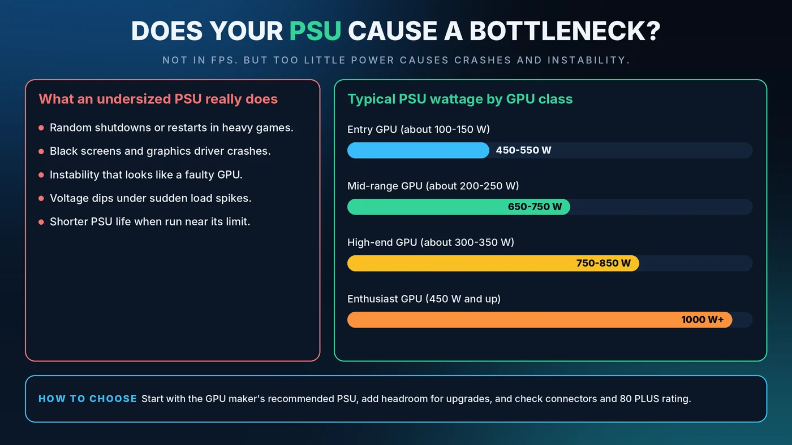

Does a PSU Cause a Bottleneck? How Much Wattage You Need for Gaming
People often ask whether a weak power supply will bottleneck a new graphics card. The honest answer is a little surprising. A PSU does not slow your frames the way a slow CPU does. If it is too small, it does something worse: it makes your PC unstable.

Short Answer: Can a PSU Bottleneck Your PC?
Not in the usual sense. A power supply unit (PSU) does not decide how fast your CPU or GPU can work, so a healthy PSU of adequate size delivers the same performance whether it is 650W or 1000W. What a PSU can do is cause shutdowns, crashes and instability when it cannot supply the power your parts ask for.
What a PSU Does in Your PC
Think of the PSU as the water main feeding a house. If every tap runs at once and the main cannot keep up, pressure collapses and things stop working. Your PSU converts wall power into the steady voltages your components need. When demand spikes, such as a graphics card ramping up in a heavy scene, the PSU has to meet it instantly.
Why a PSU Is Not a Performance Bottleneck
A CPU or GPU bottleneck is about processing speed: one part waiting on another. A PSU has no say in that. As long as it can deliver the power requested, your parts run at full speed. That is why a bigger PSU does not add FPS. If you are looking for the real cause of low frame rates, start with the CPU vs GPU bottleneck guide.
Signs Your PSU Is Too Small or Failing
An overstretched or failing PSU tends to be loud about it:
- Random shutdowns or restarts, especially in heavy games
- Black screens and graphics driver crashes under load
- Instability that looks like a faulty graphics card
- Problems that appear right after a GPU or CPU upgrade
- A burning smell, buzzing or visible damage, in which case stop using the PC and replace the unit
Because these symptoms overlap with other faults, rule out heat first. Our guide to thermal throttling vs a CPU bottleneck shows how.
How to Calculate the PSU Wattage You Need
- Find the GPU's board power. Check the maker's specification page for total graphics power.
- Find the CPU's maximum power draw. Use the processor's peak power figure, not just the base rating on the box.
- Add about 75 to 100W for the motherboard, memory, drives, fans and USB devices.
- Add 20 to 30% headroom for power spikes and future upgrades.
- Compare with the GPU maker's recommended PSU and go with the higher number.
Example: a 200W graphics card, a 125W CPU and 100W for everything else adds up to 425W. With 30% headroom that is about 550W. If the graphics card maker recommends 650W, buy 650W.
Typical PSU Wattage by Graphics Card Class
These ranges are a general guide. Always check the exact recommendation for your card.
- Entry-level GPU (about 100 to 150W): 450 to 550W
- Mid-range GPU (about 200 to 250W): 650 to 750W
- High-end GPU (about 300 to 350W): 750 to 850W
- Enthusiast GPU (450W and up): 1000W or more
Is a Bigger PSU Better?
A larger PSU will not make your games faster. Some extra capacity is smart, because it gives you room for upgrades and keeps the unit away from its limit. But buying far more than you need costs more and offers no performance gain. A sensible target is a PSU that your system uses at roughly half to two-thirds of its rating during gaming.
What Matters More Than Raw Wattage
- Build quality. A well-reviewed 650W unit from a reputable maker beats an unknown 850W unit. Look for independent reviews, solid protections and a long warranty.
- 80 PLUS rating. Bronze, Silver, Gold, Platinum and Titanium describe efficiency. Higher ratings waste less power as heat and can lower electricity use. They do not change gaming speed.
- Connectors. Make sure the PSU has the right graphics card power connectors, including the newer 12-pin style on recent cards. Seat the plug fully and firmly.
- Modern standards. Newer ATX 3.x units are designed to cope with the short power spikes modern graphics cards can produce.
Common PSU Mistakes to Avoid
- Daisy-chaining power on one cable for a power-hungry graphics card when separate cables are available
- Using adapters that do not match what your card needs
- Partly inserting a high-power connector
- Reusing a very old PSU in a brand-new high-power build
- Mixing modular cables from a different PSU model, because the pin layouts can differ and damage your parts
When Should You Upgrade Your PSU?
Upgrade when you move to a much more power-hungry graphics card, when the PC crashes under load and heat has been ruled out, or when your PSU is very old. Include the power supply in your planning with our PC upgrade checklist, and match your CPU and GPU using the pairing guide.
Conclusion
A PSU is not a speed bottleneck, but it is the foundation everything else stands on. Size it from your real parts, follow the GPU maker's recommendation, and buy on quality, not on a big number alone. To check whether your CPU and GPU are balanced before you spend, use the free Bottleneck Calculator.
Frequently Asked Questions
Does a PSU affect FPS?
Not directly. As long as it supplies enough stable power, a PSU does not change your frame rate. A weak or failing PSU causes crashes and shutdowns instead of smooth, lower FPS.
Will a 550W PSU bottleneck my graphics card?
That depends on the card. If 550W meets the graphics card maker's recommendation and covers your CPU with headroom, it is fine. If the card recommends more, buy the higher wattage to avoid instability.
Can too much wattage hurt my PC?
No. A PSU only delivers the power your parts request. A very large PSU just costs more and may run slightly less efficiently at low loads.
Is 80 PLUS Gold worth it?
It is worth it if you want lower heat, quieter operation and lower electricity use. It does not make games run faster, so quality and sufficient wattage matter first.
How do I know if my PSU is failing?
Warning signs include random restarts, black screens under load, new instability after an upgrade, or unusual noises and smells. Rule out overheating and driver problems, then test with a known-good PSU if possible.